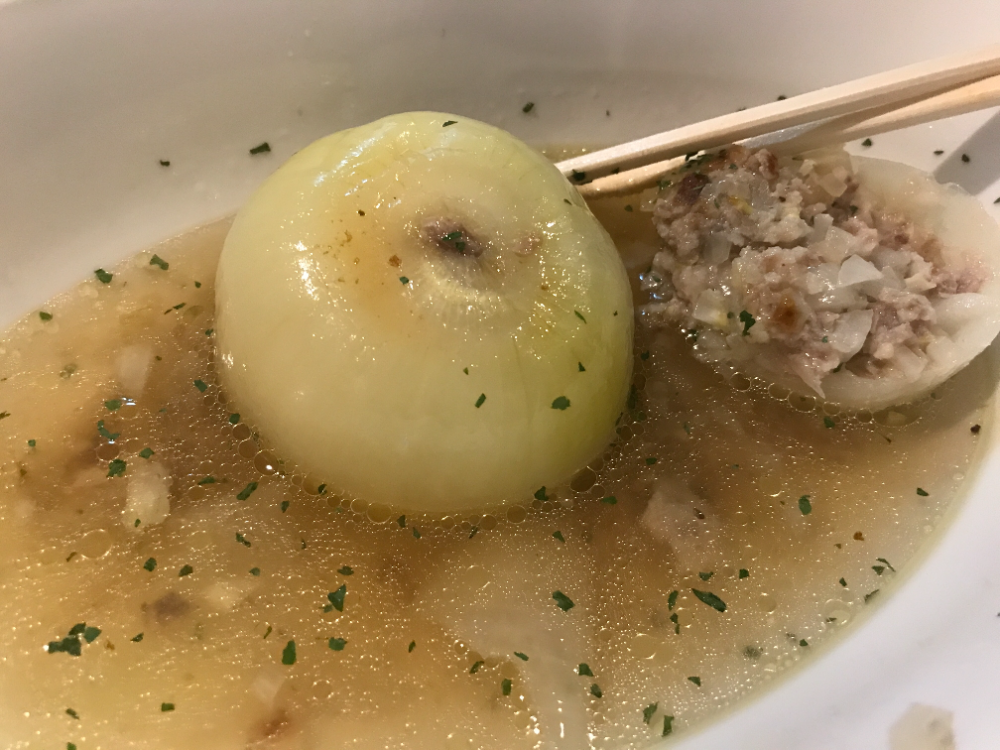

自己紹介サイト
プロフィール
趣味
出身地
その他
プロフィール
名前
仁井本 昇馬
年齢
22才
誕生日
5月6日
好きな食べ物
寿司・刺身
嫌いな食べ物
トマト
趣味
PCゲームやVR
料理
(男飯)

出身
地元
広島県広島市
現在
埼玉県蕨市
学校
広島情報専門学校 / 北海道情報大学
その他
所属
株式会社アクロネット Acronet Co., Ltd
得意言語
java
好きなフレームワーク
Spring boot